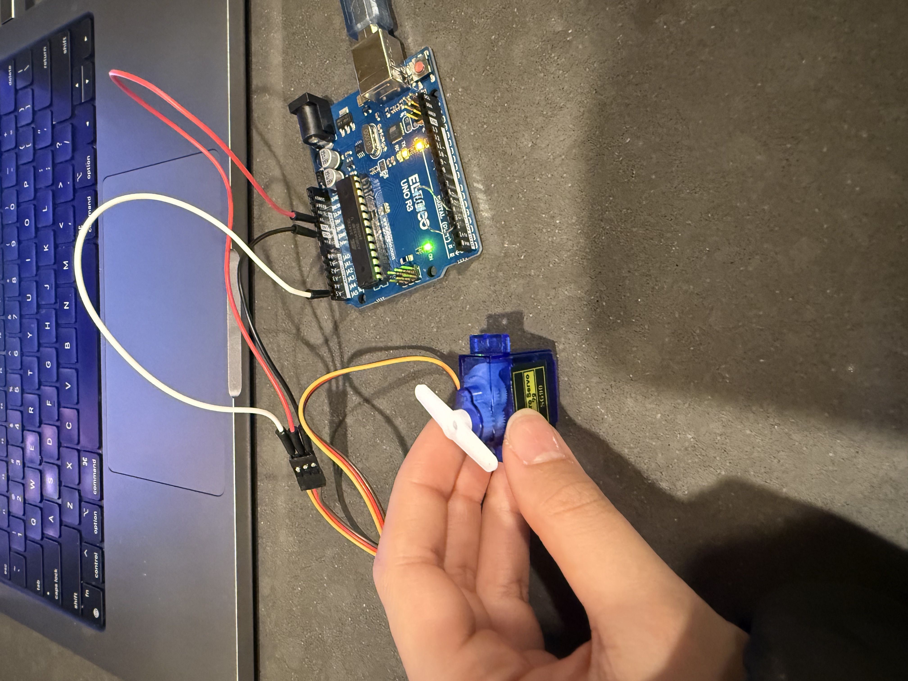

I used a 1 megaohm resistor in my capacitive sensor for absolute touch to activate it.

initialize sampleSize = 5
initialize readingsAboveThreshold = 0
initialize touchValues[] = empty array with size sampleSize
loop:
read currentTouchValue from sensor
add currentTouchValue to touchValues
readingsAboveThreshold = count of values in touchValues > touchThreshold
if readingsAboveThreshold > (sampleSize / 2):
activate servo (move to 180 degrees)
else:
deactivate servo (move to 0 degrees)
wait 100ms for stability
Question 3
initialize sum = 0
initialize count = 0
initialize N = 5 // Arbitrary number of readings to average
loop:
read currentTouchValue from sensor
// Updating sum and count vars
sum = sum + currentTouchValue
count = count + 1
// If we have N readings, calculate the average
if count == N:
averageValue = sum / N
if averageValue > touchThreshold:
activate servo
else:
deactivate servo
// Reset sum and count for the next set of readings
sum = 0
count = 0
wait 100ms
#include <Servo.h> // Library for the servo motor
#include <CapacitiveSensor.h> // Library for the capacitive touch sensor
const int servoPin = 9; // Servo motor pin
Servo myServo; // Servo object
CapacitiveSensor capSensor = CapacitiveSensor(2, 4); // 1 megaohm resistor between pins 4 & 2, pin 4 is sensor
// Threshold for capacitive touch sensor
const int touchThreshold = 800;
void setup() {
// Initialize the servo motor
myServo.attach(servoPin);
myServo.write(0); // Set initial servo position
// Start serial communication
Serial.begin(9600);
}
void loop() {
// Read touch value from the capacitive sensor
long touchValue = capSensor.capacitiveSensor(30);
// Print the touch value to the serial monitor for debugging
Serial.print("Touch Value: ");
Serial.println(touchValue);
// if the touch value exceeds the threshold, move motor
if (touchValue > touchThreshold) {
myServo.write(180); // Move servo to 180 degrees
} else {
myServo.write(0);
}
delay(100); // Small delay
}